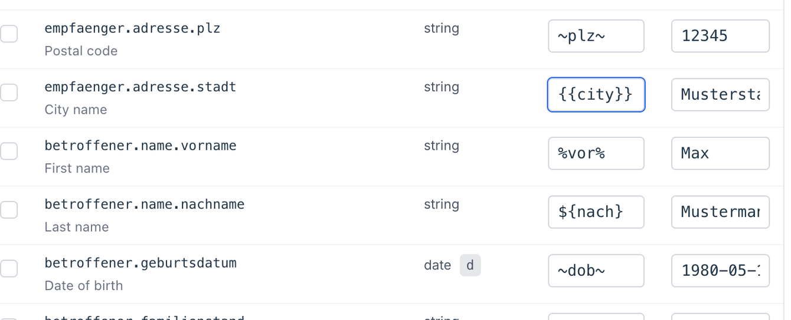

Eine Mitarbeiterin öffnet aus dem KIS heraus ein V.ap-Modul — DUBA, ELIM+, oder ein anderes. Das Formular ist bereits vorausgefüllt mit den Daten, die das KIS zum Fall bereithält.
Prüfen, absenden, fertig. Keine doppelte Eingabe, keine Übertragungsfehler, keine Wartezeit.
Das Hindernis
Manche KIS können das nicht direkt
V.ap-Module erwarten einen HTTPS-POST-Aufruf mit strukturierten Daten im Request-Body.
Viele KIS-Konfigurationen können das nicht. Die einzige Integrations-Schnittstelle, die sie anbieten: "Öffne diese URL mit den angegebenen Parametern."
Der naheliegende Umweg — Patientendaten als URL-Parameter mitzugeben — ist nicht zulässig. URLs hinterlassen Spuren in Browser-Verläufen, in Proxy-Protokollen, in Server-Zugriffslogs. Patientendaten dürfen das Krankenhaus auf diesem Weg nicht verlassen.
Was bereits da ist
Was Sie brauchen, haben Sie
"URL öffnen" ist eine der am weitesten verbreiteten KIS-Funktionen. Sie ist älter als jede modulspezifische Integrations-API. Praktisch jedes KIS unterstützt sie.
Es fehlt nur ein kleines Stück, das diese Funktion mit den modernen V.ap-Modulen verbindet.
Unser Angebot
Fremdaufruf
Eine kleine, lokal installierte Komponente. Sie nimmt die GET-URL des KIS entgegen, übernimmt die Datenaufbereitung, die authentifizierte Anmeldung und den verschlüsselten Aufruf der V.ap-API, und leitet den Browser zur vorausgefüllten Antwort weiter.
Für die Mitarbeitenden
Was Ihr Team sieht
Das vorausgefüllte V.ap-Formular erscheint im KIS-eigenen Browser. Kein Fensterwechsel, keine separate Anmeldung, kein zweiter Bildschirm.
Der gewohnte Arbeitsablauf bleibt. Was sich ändert: das Formular ist schon ausgefüllt.
Kein Schulungsbedarf. Wer das KIS bedienen kann, bedient die V.ap-Integration ohne weiteres Wissen.
Was unter Ihrer Kontrolle bleibt
Was Sie steuern, was wir betreiben
Nach der Installation läuft die Komponente vollständig unter Ihrer Kontrolle: keine Fernwartung, kein Phone-Home, keine eingehende Verbindung von außen. Ausgehend ausschließlich zur konfigurierten V.ap-Adresse, eingehend nur auf dem von Ihnen gewählten Port.
Artefakt
Läuft wo
Kontrolliert von
Fremdaufruf (Windows-Dienst)
KIS-Arbeitsplatz
Krankenhaus-Administrator
Fremdaufruf (Linux-Container)
Krankenhaus-Host
Krankenhaus-Administrator
V.ap-Module + URL-Builder
Vertama-Cloud
Vertama betreibt; Sie greifen über API-Benutzer zu
Strategisch
Integrationsfreiheit
Die Funktion "URL öffnen" ist Teil jedes KIS. Sie braucht keine modulspezifische Erweiterung Ihres KIS-Anbieters.
Welche V.ap-Module Sie integrieren und wann Sie das tun, entscheiden Sie selbst — nicht auf der Zeitachse Ihres KIS-Anbieters.
URL-Builder
Felder wählen, Platzhalter eintragen

Im V.ap URL-Builder: gewünschte Felder aus der Modul-Spezifikation auswählen, KIS-spezifische Platzhalter eintragen. Das Werkzeug kennt die V.ap-Felder; der Integrator bringt die KIS-Syntax mit.
URL-Builder
Fertige URL-Vorlage
Generierte URL-Vorlage. Einmal in die Zwischenablage kopieren, im KIS hinterlegen, fertig. Eine Vorlage gilt arbeitsplatzübergreifend für alle KIS, die diese Integration anbieten sollen.
Bereitstellung
Pro Arbeitsplatz oder zentral
Pro Arbeitsplatz
Native Windows-Dienst
Loopback (127.0.0.1)
Eine Installation pro Arbeitsplatz
Vertrauensgrenze: Betriebssystem
Zentral im Krankenhausnetz
Windows-Dienst, systemd oder Linux-Container
Routbare Adresse + Access Secret
Eine Installation für viele Arbeitsplätze
Vertrauensgrenze: Netzwerk + Secret
Dieselbe Binärdatei für beide Varianten.Die Wahl ist eine Betriebsfrage, keine Produktfrage.
Heute schon verfügbar
Was V1 leistet
Komponente in beiden Bereitstellungs-Varianten — produktiv
Browser-basiertes Admin-Dashboard für Status, Konfiguration und V.ap-Verbindungstest
Audit-Log mit Datenschutz-Garantie: Parameter-Werte und -Schlüssel werden nie protokolliert
V.ap URL-Builder für DUBA zum Start — weitere Module nutzen denselben Workflow, keine zusätzlichen Komponentenkosten
V.connect
Fremdaufruf ist der Anfang
Fremdaufruf ist das erste Mitglied der V.connect-Familie — der Bereich unseres Portfolios, der die sichere Anbindung Ihrer Systeme an die V.ap-Module zur Aufgabe hat.
Folgen werden weitere Bausteine:
Identitätssicherung auf Benutzerebene — wer hat den Aufruf wirklich getätigt
Weitere Anbindungsmuster für andere KIS-Szenarien
Werkzeuge für die KIS-seitige Integration
Nächster Schritt
Sprechen wir.
Pilotinstallation
Wir richten Fremdaufruf bei Ihnen ein und begleiten den ersten KIS-Aufruf.
Tieferer Blick
Architektur und Sicherheits-Posture im Detail — für Ihre IT-Sicherheits-Prüfung.
URL-Builder-Demo
Wir bauen mit Ihnen eine erste URL-Vorlage für Ihr Wunsch-Modul.